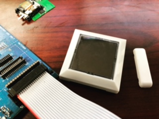
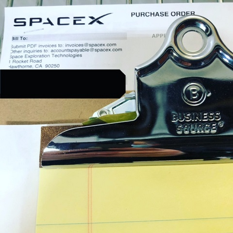

I am a proud father of three great kids and a husband to an amazing woman who helps me continue to strive to be the best version of myself.
I come from a very large family of nine kids and grew up in Dallas, TX. After finishing high school, I moved to Mar Del Plata, Argentina
where I spent time studying Spanish and teaching English at private schools. After spending a few years in South America, I moved back to
the United States when I was 22 and began working on taking college classes and picked up a job working as a project manager for Lochinvar Corporation.
The project I was managing for Lochinvar had to do with gaining access to both commercial buildings and large, often luxurious residential
houses to dismantle complex boiler systems and water heaters to change a part that had design flaws that could lead to structure fires.
Among some of the interesting buildings included: The State Capitol Building of Oklahoma, The Playboy Mansion, Ross Perot’s mansion, and a Federal Prison in Oklahoma.
Upon completion of the project, I was told I would be transferred to San Francisco where I would receive a raise, company car, and take on the
role as the territory manager. However, I decided to pursue the completion of my bachelor’s degree instead. I relocated to Arizona where
I took Engineering classes at ASU. While working on my degree, I met my wife, and our first child was born just prior to completing my degree.
In 2010, we moved back to Dallas where I took the LSAT and was accepted into SMU Law School, however, due to the news of expecting our second
child, I made the decision to pursue employment with a small competitor of Baker Hughes and Halliburton using Auto CAD, Landmark Compass and
other engineering software applications to help prevent oil spills, enhance efficiencies in the use of drilling tools and to implement better design & planning practices to reduce
the overall foot print of each project. I excelled at my job and worked my way into managing the engineering and regulatory division of the company I was working for.
By 2014, the domestic industry was at its peak and by early 2015 the price of oil dropped sharply, and layoffs ensued. I convinced one of my
friends who happens to be Willie Nelson’s grandson-in-law to invest in a start-up drilling services company. We took part in a handful of small projects in Texas, Oklahoma,
Pappa New Guinea, and China ranging from drilling for oil to geothermal projects.
I ended up relocating from Texas to Utah to consult on the largest renewable energy project west of the Colorado Rockies. This project includes
one of the largest solar farms generating 320 MW of electricity, unique sub-surface storage for refined fuels including strategic jet fuels used by the Department of Defense
and what will be only the third operating CAES Facility (Compressed Air Energy Source) producing 1000 MW of green electricity.

In 2018 I began working for a subsidiary of Siemens, a German engineering company called EnOcean who focuses on energy harvesting technology
to power IoT sensors and controllers. While working at EnOcean, I had the opportunity to work on the release of the world’s first wireless/battery-less Bluetooth sensor at CES.
We also released a multi-sensor that includes a lux level reader, temperature & humidity sensor, accelerometer to give local X, Y, Z coordinates, pairs up with a magnetic strip
to send a closed/open signal, and has RFID. In 2020, Covid-19 had a pretty big impact on the company’s profitability and so I found myself searching for something new to keep me busy.
Today, I am working for Zaxis, Inc. a leader in providing solutions for quality leak testing for companies ranging from Medtronic to SpaceX.
Aside from providing leak testing solutions, Zaxis also focusing on providing fully automated dispensing pumps which are being used by pharmaceutical companies to dispense the covid vaccine into vials.

I am currently working on a Full Stack Developer Certificate with MIT in hopes that I can use the skills to help my employer gain a stronger
online presence.
My LinkedIn Profile:
https://www.linkedin.com/in/kevin-smith-9685bb19?lipi=urn%3Ali%3Apage%3Ad_flagship3_profile_view_base_contact_details%3BVnMQeofsQLapl0GJiAQpUw%3D%3D